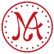
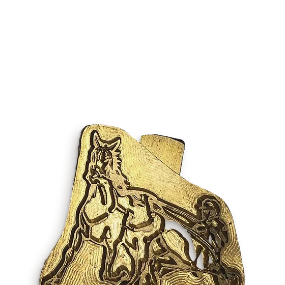
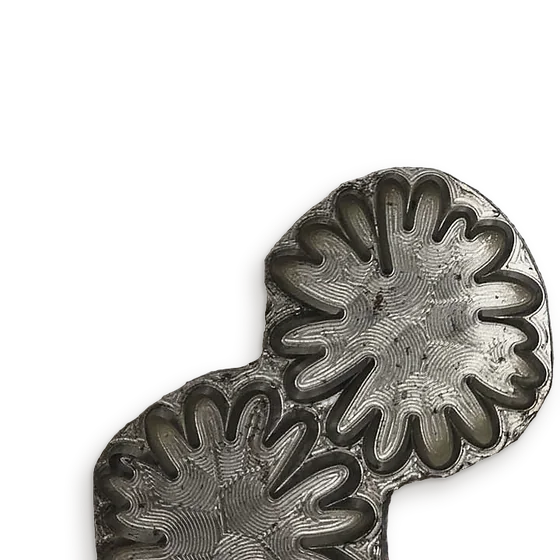
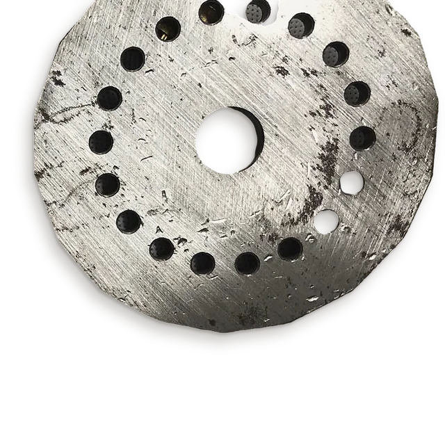
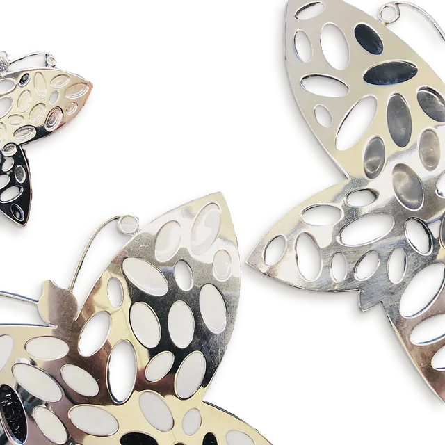
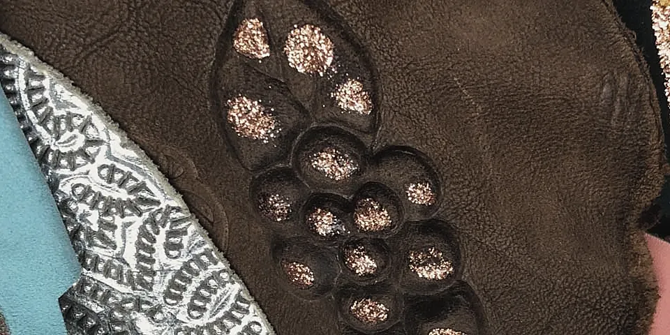
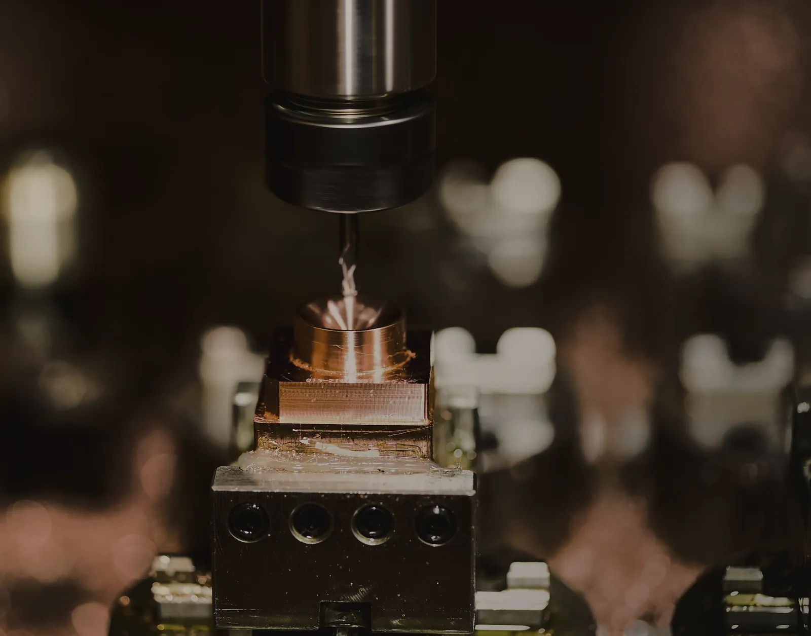
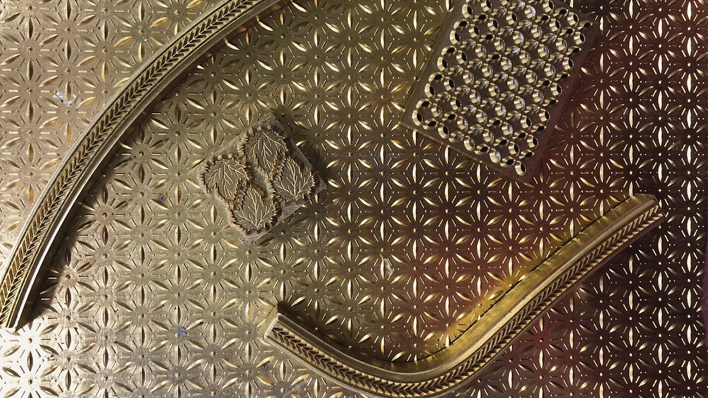
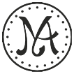
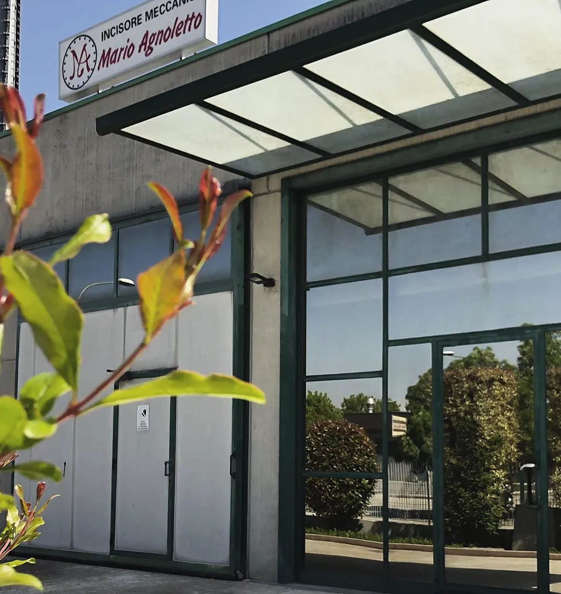

Incisore
meccanico
Fibbie, puntali, tacchi gioiello, punzoni e fustelle su disegno, per la calzatura e la pelletteria. Seguiamo il pezzo dal progetto alla serie, in zama, ottone, alluminio e acciaio.


01Tacco gioiello a lamelle in ottone, visto dall'alto
ACampionario
Otto lavorazioni, quattro metalli
Due famiglie di pezzi: gli attrezzi per chi lavora la pelle e i pezzi che finiscono sulla scarpa, sulla borsa, in vetrina. In tavola ce ne sono sette; l'ottava sono le targhe da esposizione, in alluminio, ottone e plexiglas.
7 lavorazioni in tavola







BUn pezzo, tre passaggi
Dal disegno alla serie
Si parte da un'idea del cliente: ne seguiamo la progettazione, lo sviluppo del prototipo e la produzione in serie.



CPunzoni e alfabeti
Punzoni anche in 24 ore
In acciaio e ottone, per stampare pelle e cuoio, anche in set di alfabeti per la personalizzazione. La grafica la sviluppiamo noi.
Chiama 049 98 00 985
Sul punzone,a rovescio
dritto
Ottone inciso dell'officina: un cliché a foglie, due bordi a spina, un blocchetto forato, sopra una lastra traforata.
DDove siamo
Si parte da un'idea del cliente. Seguiamo il pezzo dal progetto alla serie.
Via dell'Artigianato 18, 30030 Tombelle di Vigonovo (VE)
Apri in Google Maps
Fax 049 50 31 72
